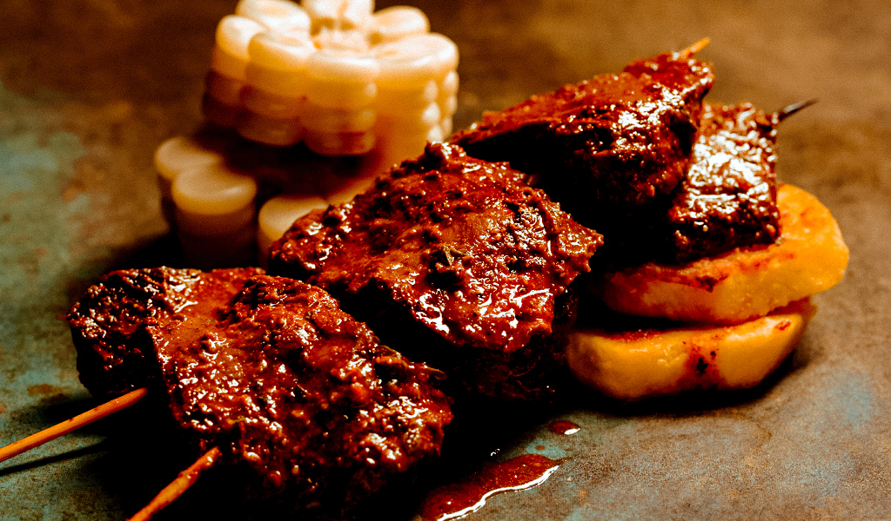
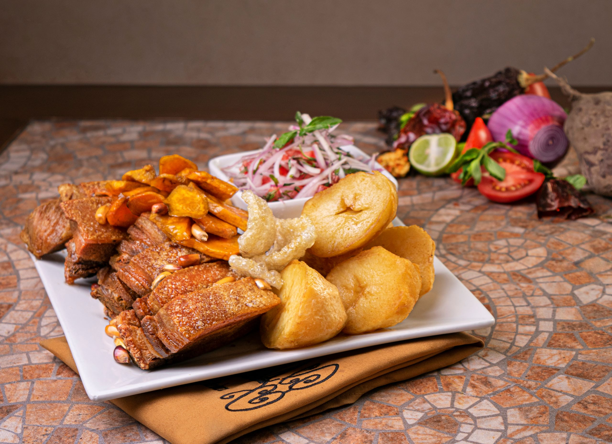

INGREDIENTES (Para 3 porciones):
Para sazonar la carne de res:
• 600 g de lomo fino de res
• 3 cdtas. de ajos molidos o rallados
• ¼ de cdta. de comino
• ¼ de cdta. de orégano
• 1 cda. de aceite vegetal
Para el lomo saltado en general:
• 1 y ½ tazas de cebolla picada en juliana gruesa
• 1 y ½ tazas de tomate picado en juliana gruesa
• 1 ají amarillo picado en tiras delgadas
• ½ taza de hojas de cebolla china picadas
• ½ taza de culantro o cilantro finamente picado
• 3 cdas de vinagre de vino tinto
• 9 cdas. de sillao o salsa de soya
• 3 cdas. de salsa de ostión
• Caldo o fondo de carne de res al gusto
• Sal al gusto
• Aceite vegetal
PREPARACIÓN
4 porciones
8 minutos
Cortar el lomo en tiras gruesas. Sazonar con sal, pimienta y ajo molido.
Cortar los tomates y las cebollas en gajos gruesos.
Cortar el ají amarillo en tiras delgadas. Desechar las venas y las pepas.
Cortar las papas blancas en bastones.
Freír las papas en abundante aceite caliente.
Poner una sartén amplia al fuego. Cuando esté caliente, añadir un chorro de aceite y esperar a que empiece a humear. Inmediatamente, agregar el lomo y freír sin mover. Cuando la carne esté dorada por el lado de abajo, empezar a saltear y flamear. Puedes echar un chorrito de pisco para poder flambear (hazlo con mucho cuidado, pues el fuego puede ser alto).
Agregar las cebollas, el ají amarillo y el vinagre. Seguir salteando.
Añadir los tomates y el sillao. Seguir salteando.
Al final, echar el culantro picado.
Servir caliente con las papas fritas. Acompañar con una porción de arroz blanco.
CAUSA RELLENA
INGREDIENTES
1 kg de patata vieja (Kennebec)
10 ajíes amarillos
100 g de mantequilla derretida
2 cucharadas de aceite de oliva
2 limas
Sal
2 pechugas de pollo
1 cebolla morada
1 cucharadilla de semillas de cilantro
1 cucharadilla de semillas de comino
2 hojas de laurel
Mayonesa:
1 huevo
Sal
Media lima
350 ml de aceite de girasol
2 aguacates
Tomates cherrys
Cilantro fresco
Aceitunas de botija
Chiles para emplatar
PREPARACIÓN
Lava las patatas, ponlas en una cacerola y cúbrelas con agua fría. Pon la cacerola sobre fuego medio alto, lleva el agua a ebullición y cuécelas durante 20 minutos, o hasta que no opongan resistencia al ser atravesadas con un cuchillo.
Mientras, quítales los tallos, las semillas y las venas a los ajíes amarillos.
Hierve los ajíes 5 minutos, después descarta el agua.
Vuelve a hervir los ajíes 8 minutos y después escúrrelos debajo de agua fría para enfriarlos.
Quítales la piel a los ajíes y después transfiere la carne al vaso de un procesador de alimentos con un chorrito de agua. Procesa hasta que sea una pasta homogénea.
Escurre y pela las patatas. Machácalas.
Pasa las patatas por un tamizador para que creen un puré esponjoso y homogéneo.
Al bol, añade la mantequilla derretida y el aceite de oliva. Incorpora todos los ingredientes.
Añade el zumo de lima, la sal y tres cucharadas de la pasta de ajíes. Mezcla, prueba y corrige. Refrigera el puré hasta que esté completamente frío.
En una cacerola con agua hirviendo, añade abundante sal, las semillas de cilantro, las de comino, las hojas de laurel y las pechugas de pollo. Cuécelas durante 25 minutos, o hasta que alcancen 74 grados centígrados en la parte más gruesa.
Mientras se hierven las pechugas, en un bol casca el huevo, añade la sal y el zumo de lima. Bate hasta que sea homogéneo y después añade poco a poco el aceite de girasol, creando una emulsión, hasta que la mayonesa sea espesa y no gotee al coger un poco con el dedo.
Deja enfriar las pechugas de pollo y después córtalas en rodajas y deshiláchalas con las manos. Córtalas con un cuchillo en trozos pequeños y añádelas al bol con la mayonesa. Corta también una cebolla morada y añádela al bol. Mezcla y refrigera.
Quítales el hueso a las aceitunas de botija y pícalas fino. Pela y corta los aguacates en rodajas. Corta los cherrys en rodajas finas.
Monta la causa: capa gruesa de puré de patata, aguacate, puré de patata, pollo con mayonesa, puré de patata. Finaliza con los cherrys, la picada de aceitunas de botija, cilantro fresco, un poco de pasta de ajíes amarillos, dos mitades de lima y chiles frescos.

ANTICUTXOS
Ingredientes de los anticuchos peruanos
Para las brochetas:
1 kg de corazón de vaca
5 cucharadas de pasta de ají panca
2 cucharaditas de pasta de ají mirasol
½ cucharadita de comino al gusto
½ cucharadita de pimienta negra al gusto
2 cucharadas de orégano seco
45 g de dientes de ajos pelados
2 pizcas de sal gorda
4 cucharadas de vinagre de vino, blanco o tinto
60 ml de cerveza negra (opcional)
12 cucharadas de aceite de oliva (u otro aceite vegetal)
Sal al gusto
4 patatas cocidas peladas
Para la salsa criolla peruana:
1 cebolla roja
1 ají amarillos (o rocoto)
1 cucharada cilantro picado
Zumo de 1 lima
Sal
Pimienta negra recién molida
PREPARACION
Limpiamos y troceamos el corazón de vaca
Mezclamos los ajís, el comino y la pimienta
Tostamos el orégano y lo añadimos al adobo pulverizándolo con las manos
Añadimos los ajos majados con sal al adobo
Vertemos el vinagre, la cerveza, el aceite, sal al gusto y mezclamos
Añadimos el corazón troceado, mezclamos y dejamos adobar entre 4 y 24 horas en la nevera
Montamos los anticuchos formando brochetas con 100 g de corazón
Mezclamos el adobo sobrante con aceite de oliva y reservamos
Ponemos los anticuchos en una bandeja de horno y los asamos al grill 15 minutos
Los pincelamos con la mezcla de aceite y adobo cada 5 minutos
Tras 15 minutos, los giramos y los asamos otros 10 o 15 minutos pincelándolos cada 5 minutos
Asamos las patatas 5 minutos pinceladas con la misma mezcla
Hacemos la salsa criolla mezclando la cebolla roja y el ají cortados en juliana fina
Añadimos el cilantro picado y el zumo de lima, y mezclamos
Servimos los anticuchos con las patatas y la salsa criolla
PACHAMANCA A LA TIERRA
Ingredientes:
Año escolar 2024: ¿Qué significan las calificaciones AD, A, B y C, según el Minedu?
Te puede interesar:
Año escolar 2024: ¿Qué significan las calificaciones AD, A, B y C, según el Minedu?
1 cebolla roja picada
500 g de panceta de cerdo en trozos
500 g de presas de pollo
2 ½ cdtas. de sal
¼ de cdta. de pimienta
¼ de cdta. de comino
4 cdas. de ajo molido
4 cdas. de pasta de ají amarillo
3 cdas. de pasta de ají panca
1 taza de hojas de chincho
1 taza de hojas de huacatay y dos ramas enteras
4 cdas. de aceite vegetal
16 unidades de habas con cáscara y sin vaina
4 camotes chicos (500 g)
4 papas huayro
2 choclos
16 hojas de pancas de choclo
1 yuca pelada en trozos (opcional)
Preparación
La carne debe estar bien marinada con todas las hierbas y especias; es mejor sazonar la carne la noche anterior para que tenga buen sabor. Los locales utilizan productos frescos de la zona.
Paso 1: proceso de marinado
Picar la carne (pollo, cerdo, cordero, ternera, etc.) en tamaños pequeños, de un kilo o dos como máximo cada uno; la carne debe ser demasiado espesa para ayudar a infundir sabores a la carne. Si es demasiado delgado se puede quemar; 1 kilo o 2 con un mínimo de 2 pulgadas se cocinarán perfectamente.
Antes de marinar, perfore algunos agujeros en la carne con un tenedor para facilitar la absorción de la salsa. También puede usar un cuchillo para carne de res y similares.
Para preparar la salsa: Licúa el Aji Panca , el chile amarillo, el ajo, el comino, el romero y el Huacatay, y agrega vinagre, cerveza negra, salsa de soya, jugo de limón, jugo de naranja, chicha si es posible y sal.
Asegúrate de cubrir todas las partes de la carne y déjala reposar en la salsa durante la noche.
Paso 2: Haz un horno de barro
Haga un agujero en el suelo de unos 10 cm de profundidad donde necesita construir un horno de barro con piedras; necesitas lavar las piedras previamente.
Coloca las rocas grandes en el fondo y las pequeñas en la parte superior. Necesitas construir una media cúpula con una puerta ancha desde donde prenderás fuego.
Paso 3: Calentar las piedras
Una vez que tu piedra esté lista, coloca la leña con cuidado y enciende un fuego; debes mantenerlo en el fuego durante aproximadamente 1 hora hasta que la piedra esté muy caliente. La parte interna del sobre debe ser blanca; esto indica que las piedras están lo suficientemente calientes para cocinar la carne.
Paso 4: Coloque los ingredientes
Antes de encender el fuego, asegúrate de tener todos los ingredientes listos alrededor del horno y listos para poner, así no perderemos tiempo y el horno no se enfriará.
Primero, toma un recipiente y agrega agua limpia, agrega sal, y con la ayuda de hierbas, espolvorea lentamente para limpiar las piedras calientes mientras aún están en llamas. Esto agregará un sabor salado a todos nuestros ingredientes.
También puedes espolvorear la sal en las papas y dejar secar antes de meterlos en el horno.
Cuy y otras carnes en la Pachamanca
Variedad de tubérculos: oca, papas, camotes
Paso 4: Enterrar con hierbas y tierra
Una vez que apagues el fuego, destruye con cuidado la cúpula, retira la piedra caliente con la ayuda de unos guantes gruesos o unas tenazas y colócala sobre un lado limpio.
En la base del horno, coloca primero la papa, solo una capa, luego otra capa de piedras calientes, agrega otra capa con la carne, y cubre siempre con piedras; en la capa superior, puede agregar frijoles, plátanos, cuy o cualquier cosa que se pueda cocinar fácilmente.
Cubrir con hierbas como muña o pasto limpio; debe cubrir todas las áreas para evitar el contacto con el suelo.
Encima de las hierbas, puedes cubrirlas con una alfombra, plástico limpio de uso local.
Una vez que te asegures de que no entre tierra al horno, cubre todo con tierra de unos 5 centímetros de profundidad. Debe asegurarse de que todas las áreas estén cubiertas. De lo contrario, el calor se escapará. La cocción tardará unos 45 minutos.
Paso 5: Hora de comer
Después de 45 minutos o una hora, tome sus sartenes, tazón y guantes para quitar las piedras calientes y comience a quitar con cuidado cada capa.
No hay nada mejor que probar un trozo de papas o carne recién salida del horno, así que ten las manos limpias y siéntete libre de probar primero. Es importante tener todas las mesas preparadas, y tan pronto como retire todos los ingredientes para hornear, debe ir a la mesa y comer cuando esté caliente y sabroso.
Puedes acompañar con ensaladas, salsas, vinagretas, vino y Cerveza. Recomendamos tomar té caliente después de las comidas para ayudar con la digestión.

CHICHARRON DE CERDO
INGREDIENTES
1/2 kilo de costilla de cerdo o panceta de cerdo
150 gramos de manteca de cerdo
1/2 tallo de apio
1/2 tallo de poro
1 ramita de hierbabuena
1 cucharada de ajo molido
1 limón
Sal y pimienta al gusto
PREPARACIÓN
- El primer paso es poner a cocinar la carne de cerdo en una olla de presión para que la cocción sea más rápida. Luego agrega el tallo de apio y poro, el ajo, la hierbabuena, la sal y la pimienta al gusto. Deja cocinar por 40 minutos aproximadamente (el tiempo dependerá del tamaño de la pieza, puede requerir más o, menos tiempo).
- Cuando la carne de chancho esté tierna, retíralo de la olla y sécalo con papel absorbente.
- Seguidamente sazónalo con sal, pimienta y un poco de jugo de limón. Reserva.
- Adicionalmente, pon a calentar un sartén y agrega la manteca. Cuando la manteca esté caliente coloca los trozos de cerdo a freír. Dóralos por ambos lados y retira. Colócalos sobre papel absorbente para retirar el exceso de grasa.
- Sirve y acompaña con papas o yucas doradas, sarsa criolla, cancha, arroz y camote frito.
OLLUQUITO CON CHARQUI
Ingredientes para hacer Olluquito con charqui:
½ kilogramo de olluquito
100 gramos de charqui
1 cebolla grande
1 cucharada sopera de ajo picado o molido
2 cucharadas soperas de ají amarillo molido
1 cucharada sopera de ají panca en pasta
1 pizca de pimienta negra molida
1 pellizco de comino molido
sal c/n
culantro en rama y picado
aceite c/n
PREPARACION
1Empieza cortando los vegetales. En una tabla coloca la cebolla, córtala por la mitad y retira la capa exterior que las recubre. Luego, coloca una mitad de esta apoyando la base plana sobre la tabla, cortando el extremo donde comienza a crecer el tallo y corta tiras finas, pero sin llegar al extremo para mantener la cebolla en una pieza. Luego, corta de forma transversal para obtener dados pequeños y repite el mismo proceso con la otra mitad. Reserva.
2Aparte, lava los ollucos, córtalos en láminas delgadas (puedes utilizar una mandolina) y procede a cortarlas en juliana.
3Para quitar el sabor amargo, coloca todo el olluco en un bowl y esparce un buen puñado de sal, masajea un poco para que la sal se distribuya bien, deja reposar al menos 10 minutos. Cumplido el tiempo, enjuágalos muy bien y déjalos escurriendo.
4Pon a calentar una olla, vierte un chorro de aceite y cuando esté caliente, añade la cebolla picada. Sofríela por un par de minutos hasta que se vea traslúcida.
5A continuación, añade el ajo picado, deja sudar y, luego, incorpora el ají amarillo molido, ají panca en pasta, pimienta negra molida, una pizca de comino molido y una cucharadita de sal. Mantén en fuego medio moviendo ocasionalmente hasta que obtenga la textura de una mermelada y el aceite se vea separado en la superficie.
6Integra el charqui. Esta carne deshidratada la debes remojar previamente (mejor si lo haces desde la noche anterior), luego lávala y deshiláchala o córtala en tiras delgadas en dirección contraria a la fibra.
7Sofríe en el aderezo por un par de minutos.
8Agrega el olluquito junto con una rama de culantro, remueve, tapa y dejar cocinar el olluquito por 30 minutos. No es necesario añadir caldo de carne ni agua porque el olluco contiene bastante agua, por lo que soltará líquido y se cocinará prácticamente a vapor. Sin embargo, si la tapa no es lo suficientemente hermética o el fuego está demasiado alto y notas que no hay líquido en el fondo de la olla, puedes verter un chorrito de fondo de carne o agua para evitar que se queme.
9Para finalizar, rectifica la sazón, agrega culantro picado al gusto y sirve una generosa porción. ¡Buen provecho! Cuéntanos en los comentarios tu opinión y comparte con nosotros una fotografía del resultado final.